Edge-aware Bidirectional Diffusion Dense Depth Estimation from Light Fields
British Machine Vision Conference (BMVC) 2021
Abstract
We present an algorithm to estimate fast and accurate depth maps from light fields via a sparse set of depth edges and gradients. Our proposed approach is based around the idea that true depth edges are more sensitive than texture edges to local constraints, and so they can be reliably disambiguated through a bidirectional diffusion process. First, we use epipolar-plane images to estimate sub-pixel disparity at a sparse set of pixels. To find sparse points efficiently, we propose an entropy-based refinement approach to a line estimate from a limited set of oriented filter banks. Next, to estimate the diffusion direction away from sparse points, we optimize constraints at these points via our bidirectional diffusion method. This resolves the ambiguity of which surface the edge belongs to and reliably separates depth from texture edges, allowing us to diffuse the sparse set in a depth-edge and occlusion-aware manner to obtain accurate dense depth maps.
Method
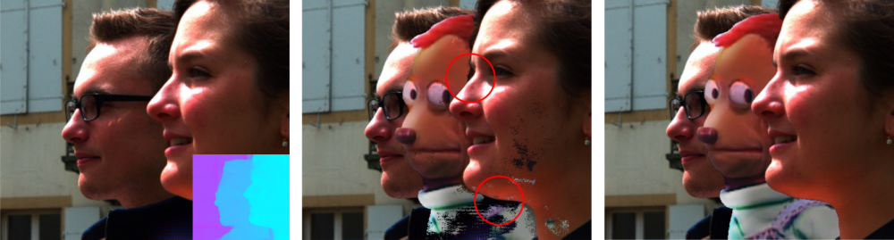
Citation
@inproceedings{Khan_2021,
series = {BMVC 2021},
title = {Edge-aware Bidirectional Diffusion for Dense Depth Estimation from Light Fields},
url = {http://dx.doi.org/10.5244/C.35.182},
DOI = {10.5244/c.35.182},
booktitle = {Proceedings of the British Machine Vision Conference 2021},
publisher = {British Machine Vision Association},
author = {Khan, Numair and Kim, Min H. and Tompkin, James},
year = {2021},
collection= {BMVC 2021}
}This work initially appeared as a Brown University technical report, Fast and Accurate 4D Light Field Depth Estimation (CS-20-01).
View-consistent 4D Light Field Depth Estimation
British Machine Vision Conference (BMVC) 2020
Abstract
We propose a method to compute depth maps for every sub-aperture image in a lightfield in a view consistent way. Previous light field depth estimation methods typically estimate a depth map only for the central sub-aperture view, and struggle with view consistent estimation. Our method precisely defines depth edges via EPIs, then we diffuse these edges spatially within the central view. These depth estimates are then propagated to all other views in an occlusion-aware way. Finally, disoccluded regions are completed by diffusion in EPI space. Our method runs efficiently with respect to both other classical and deep learning-based approaches, and achieves competitive quantitative metrics and qualitative performance on both synthetic and real-world light fields.
Results
Depth consistency comparisons across novel views:


Our method works with both real and synthetic datasets, and a range of baselines:
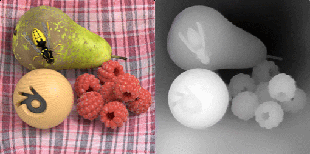
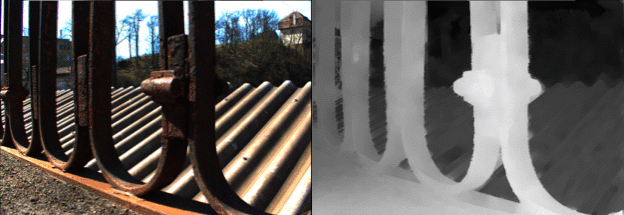
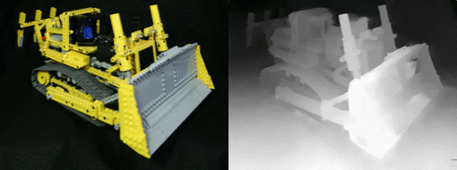
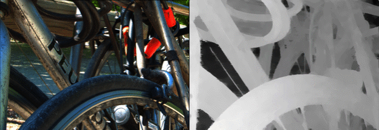
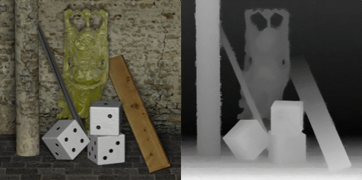
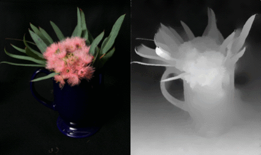
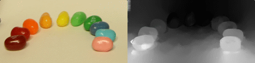
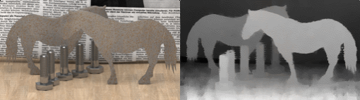
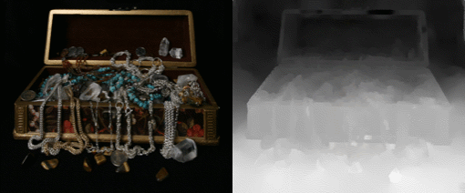
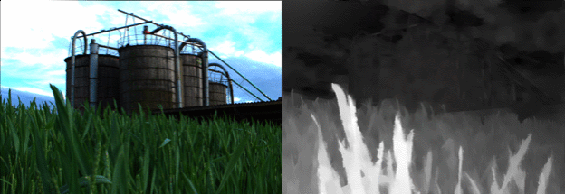
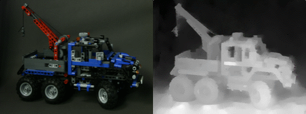
Video
Download supplemental video (MP4)
Presentation
Citation
@inproceedings{Khan_2020,
series = {BMVC 2020},
title = {View-consistent 4D Light Field Depth Estimation},
url = {http://dx.doi.org/10.5244/C.34.103},
DOI = {10.5244/c.34.103},
booktitle = {Proceedings of the British Machine Vision Conference 2020},
publisher = {British Machine Vision Association},
author = {Khan, Numair and Kim, Min H. and Tompkin, James},
year = {2020},
collection= {BMVC 2020}
}Acknowledgements
Numair Khan thanks an Andy van Dam PhD Fellowship, James Tompkin thanks a gift from Cognex, and Min H. Kim thanks a Korea NRF grant (2019R1A2C3007229).